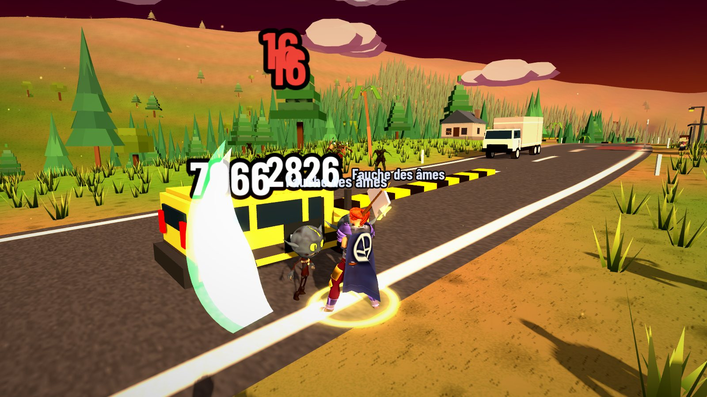
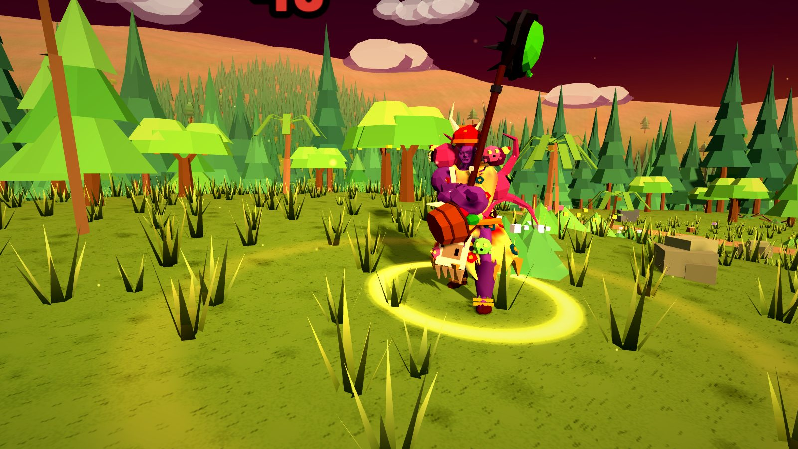
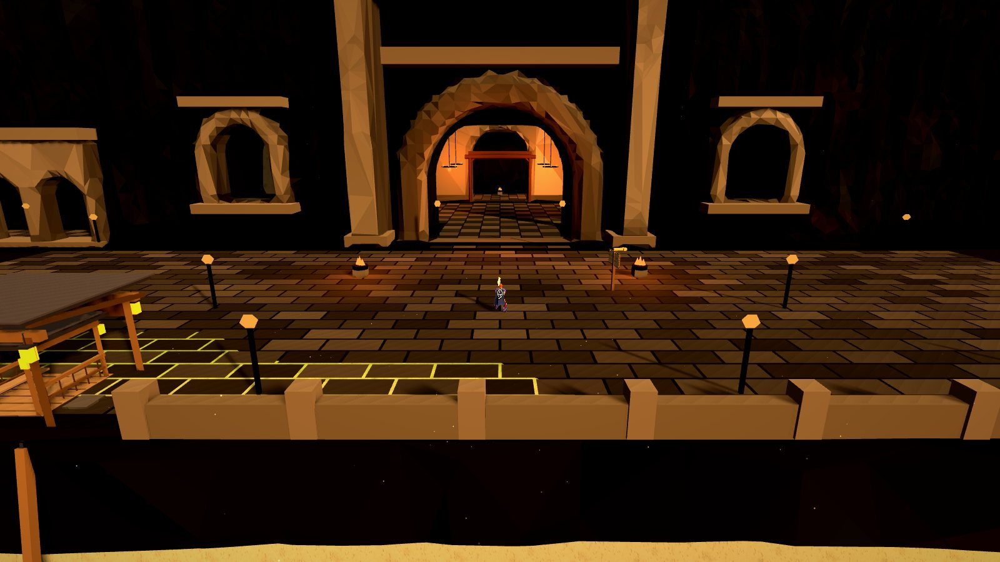

La ligne, du dépôt au volcan
Chaque arrêt correspond à une tranche de niveaux. Tu commences dans la forêt au volant du bus ; tu finis au niveau 60 sur les pentes du Piton de la Fournaise.
-
Niv. 1 – 13
Forêt de la Ligne 13
Le dépôt, la route, les premiers passagers. Trois boss t’y attendent : Bidou, la Bûcheronne et le Motard.
-
Niv. 8 – 21
Ferme et mines des Morel
Onze quêtes chez la famille Morel, des champs à défendre et une mine à nettoyer.
-
Niv. 12 – 25
Cimetière des Pendus
La forêt nord tourne mal. Au fond du cimetière règne le Roi putride.
-
Niv. 16 – 26
Côte des Naufragés et Capitale
Quarante quêtes sur la côte, le Tombeau de La Buse, et la capitale pour souffler entre deux sorties.
-
Niv. 24 – 36
Marais des Brumes
Le brouillard, les marais et la cascade de l’ermite.
-
Niv. 30 – 45
Donjons
Le Dragon, la Crypte et l’Épouvantail, à faire en groupe.
-
Niv. 46 – 60
Piton de la Fournaise
La fin du voyage : zombies de lave, Pyraxia, Vorthax, et les raids du Cratère et du Cap La Houssaye.
À quoi ça ressemble



14 classes, 9 races
Choisis qui descend du bus. Chaque classe a ses compétences, ses évolutions et son équipement.
- Guerrier
- Tank, DPS
- Clerc
- Soigneur
- Templier
- Tank, DPS
- HappyKiller
- À distance
- Solstice
- Magie
- Vesper
- Corps à corps
- Démoniste
- Magie
- Faraday
- DPS, soutien
- Envoûteur
- Contrôle
- Ossuaire
- Invocations
- Brasier
- Magie
- Boréal
- Corps à corps
- Nyx
- Meute
- Psychopompe
- Corps à corps
Humain, Minotaure, Orc, Varkhyl, Squelette, Elfe Papillon, Démon, Lutin, Reptilien de lave.
Nouveau dans la 1.92.0
Installer sur Android
Télécharger l’APK- Télécharge le fichier. Le bouton récupère toujours la dernière version.
- Autorise l’installation. Android demande la permission d’installer des applications venant de ton navigateur : accepte-la une fois.
- Ouvre le fichier et installe. Pour une mise à jour, installe simplement par-dessus l’ancienne version.